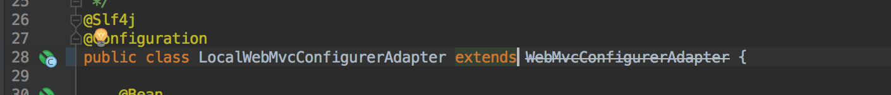
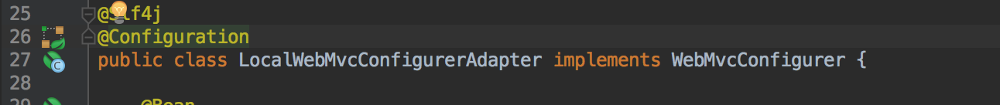

springboot 2.0 之后，Springboot中配置WebMvcConfigurerAdapter的时候发现这个类过时了。发现官方在 spring5 弃用了
springboot 2.0
WebMvcConfigurerAdapter，因为 springboot2.0 使用的 spring5，所以会出现过时。如下图所示。
WebMvcConfigurerAdapter
springboot2.0

但是这个问题也很好解决，我们只需要实现 WebMvcConfigurer接口就可以了。如下图所示。
